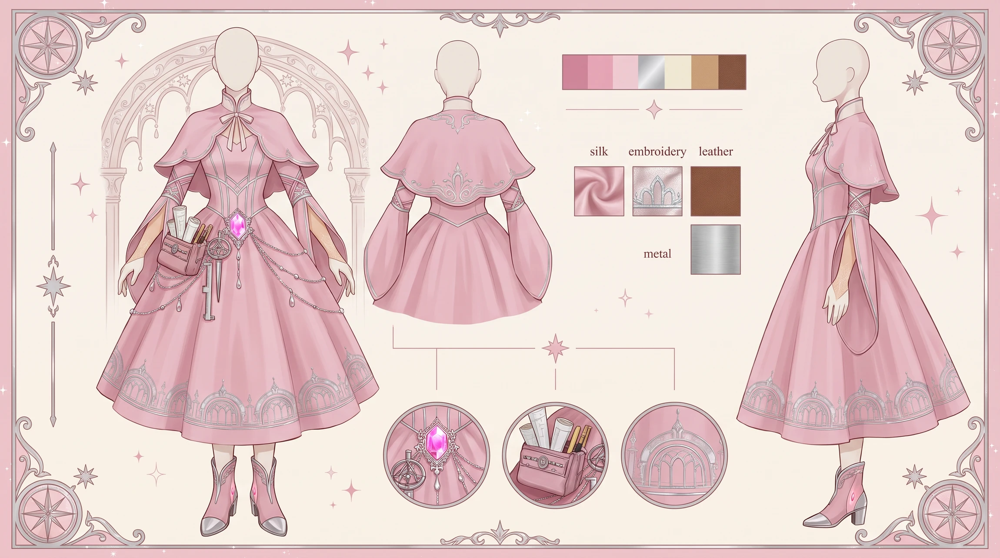
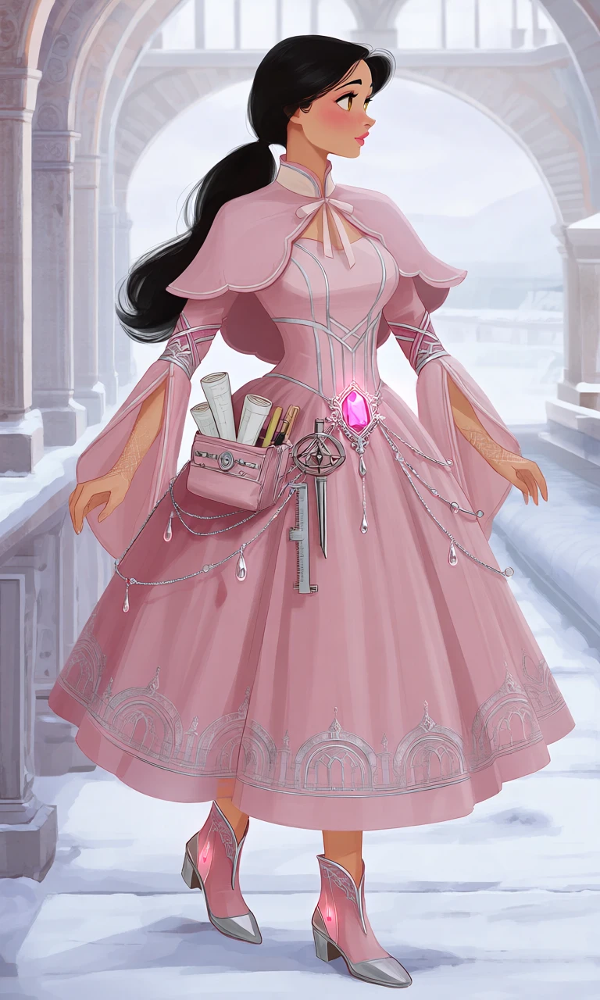
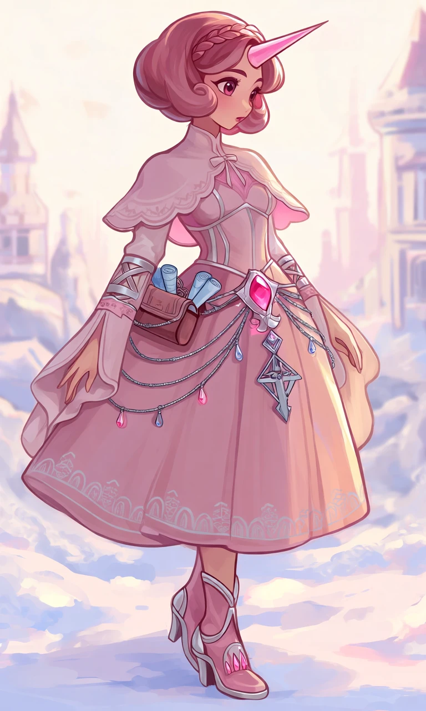

The Rose Quartz Cartographer

Outfit Prompt
An elegant, feminine fantasy outfit in morganite pink, dusty rose, blush pink, pale peach, icy white, and silver, combining refined princess-like fashion with delicate architectural details and magical engineering accessories.
The outfit features a short, structured shoulder capelet ending around the upper chest, with softly scalloped edges and a small elegant bow at the center of the collar.
Beneath the capelet is a fitted, high-neck pale pink bodice with a structured corset-like waist. The bodice features delicate vertical silver piping and symmetrical geometric seams inspired by architectural support beams and elegant columns.
A high-waisted, knee-length pleated skirt in soft dusty pink has a clean, gently flared silhouette. Along the bottom hem, subtle silver embroidery forms repeating bridge arches and intricate architectural patterns, creating a sophisticated decorative border.
Long, split draping sleeves extend from beneath the capelet, leaving portions of the upper arms visible. The sleeves are fitted near the upper arms with decorative crisscross silver and pink bands, then become long, loose, and flowing toward the wrists. Their trim features subtle geometric patterns inspired by structural braces and interconnected pipelines.
Several delicate silver chains drape elegantly from the waist like jewelry, arranged to resemble interconnected water lines. Small crystal droplets hang from some of the chains, creating a graceful ornamental effect.
At the center of the waist is a large faceted pink morganite gemstone set into an ornate silver fixture. The gemstone functions as a magical heating crystal, emitting a faint, warm pink glow.
A small, elegant utility pouch rests at one hip, containing tiny rolled blueprints, measuring cord, and chalk. A miniature silver drafting compass and folding measuring ruler hang from the belt like decorative charms. These accessories combine beautiful fantasy jewelry craftsmanship with delicate professional engineering tools.
Practical yet feminine pink ankle boots feature elegant silver trim, small architectural arch motifs around the heels, soft warm lining, and tiny glowing pink heating crystals embedded near the soles. The boots have low, sturdy heels and a refined silhouette suitable for walking through snow.
The complete ensemble combines soft pink fabrics, silver architectural embroidery, delicate utility accessories, and magical heating technology. Its refined construction and graceful details create an elegant fantasy outfit inspired by roads, bridges, water systems, and winter infrastructure, balancing practical functionality with charming princess-like sophistication.
Outfit Examples



